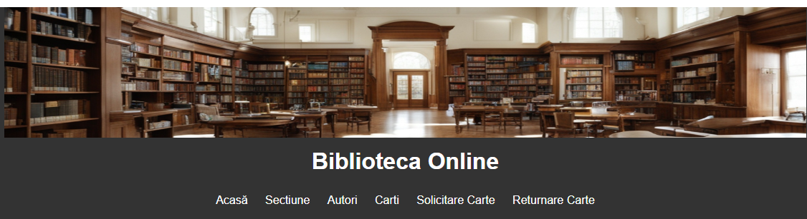

Proiectele mele

Biblioteca Albesti Paleologu
Un site in lucru pentru un proiect civic destinat comunitatii Albesti Paleologu, proiectat HTML, CSS și un strop de JavaScript.
Vezi Proiectul
To-Do App
Aplicație web de organizare task-uri, folosind JavaScript vanilla și localStorage.
Vezi Proiectul
Portofoliu personal
Un site responsive pentru prezentarea carierei și proiectelor, exact ca acesta!
Vezi Proiectul